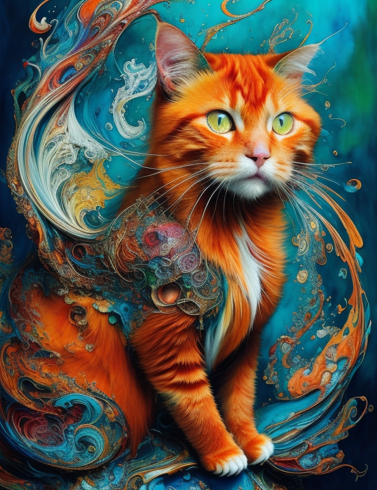

Ginger
arte de IA

Cinema lover
Gateira
arte de IA
A música popular brasileira é um verdadeiro caldeirão cultural, onde se misturam ritmos, histórias e emoções. Desde as batidas pulsantes do samba até a suavidade da bossa nova, cada nota ressoa com a alma do povo brasileiro, contando suas alegrias, dores e anseios. É uma jornada musical que atravessa gerações, unindo artistas icônicos e anônimos numa sinfonia de identidade e diversidade, onde a música é muito mais do que simplesmente uma melodia, é um reflexo da alma vibrante e multifacetada do Brasil.
Como estudante de desenvolvimento de sistemas com foco em front-end, meu hobby favorito é gerar imagens usando inteligência artificial. Aprendi sobre redes neurais convolucionais (CNNs) e como elas podem criar composições únicas e surpreendentes. Desde pinturas abstratas até retratos surreais, a IA me permite explorar a interseção entre tecnologia e criatividade.
Olá, pessoal! Como muitos de vocês sabem, pratico yoga há 5 anos e durante a pandemia, essa prática milenar se tornou meu refúgio. O yoga não apenas fortaleceu meu corpo, mas também transformou minha saúde mental. Com aulas online e meditação regular, encontrei alívio do estresse, ansiedade e insônia. O yoga me proporcionou um espaço de tranquilidade e autocompaixão, ajudando-me a enfrentar os desafios emocionais durante esse período difícil.